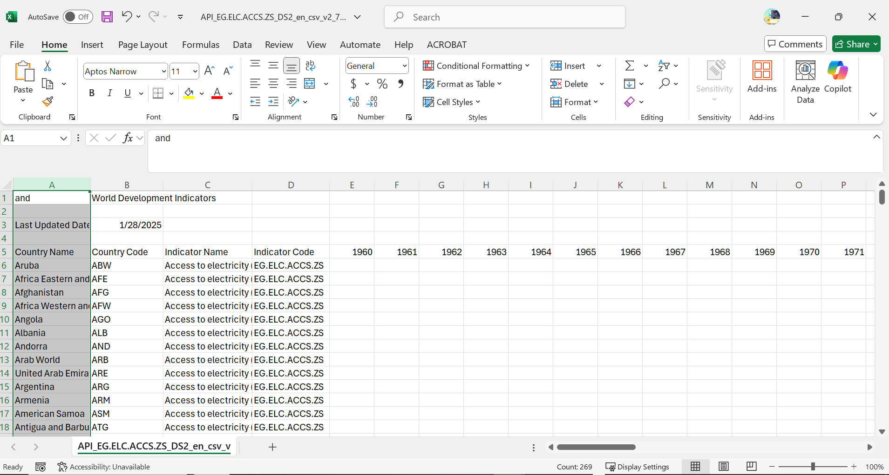

library(readxl) #for spreadsheets
library(readr) #also for spreadsheets
library(haven) #for SPSS, STATA, and SASLegel 393E Spring 2025: Lab Meeting#2: Tutorial#2 Quiz Solutions; R Project; Loading Dataset & Data Structure
lab meeting
Additional practices and materials
R Project, Loading Dataset, Data Structure
This week, we talk about data collection and coding. In today’s lab, in addition to the functions in Tutorial#2, let’s explore some basic operations of loading a dataset and coding some data.
Loading a dataset.
In Tutorial#2, all the three datasets are pre-loading for you already. However, these datasets are not pre-loaded in the RStudio console on our devices. How can we load them?
First, you need to go to the sources of the datasets (pseo: select “View Files” and download the .CSV file; electric: download the .CSV file) and download them to the local device manually.
The next step is to read these downloaded data files into R. Since data files can be stored in different formats:
spreadsheets: comma-separated values (.csv file), excel and Google Sheets (.xls file);
other statistical software (SPSS, STATA, SAS);
text files (.txt);
database (.sql);
other unstructured data: image, text, audio, video;
You can even ask R to read a data files online.
We don’t usually encounter the last two types of data files in legal studies, and they require specific R packages to be read. With the first two types of data, we primarily use the following functions with the two pre-installed packages to read.
If we know what packges we need to use for a project, we can load them all at once:
#create a vector contains the names of the needed packages, and assign a name "needed.packages" for it.
needed.packages<-c('readxl','readr','haven','dplyr')
#lapply() allows us to loop over and execute every element in the object "needed.packages".
lapply(needed.packages, require, character.only = TRUE)Loading required package: dplyr
Attaching package: 'dplyr'The following objects are masked from 'package:stats':
filter, lagThe following objects are masked from 'package:base':
intersect, setdiff, setequal, union[[1]]
[1] TRUE
[[2]]
[1] TRUE
[[3]]
[1] TRUE
[[4]]
[1] TRUEFor .txt files, we have multiple function options to use. For example:
read.table(): General function for reading tabular data from a text file.
read.delim(): Specialized function for tab-separated files (.txt with tab separation).
Before I load the two datasets into R, there are two more things I want to introduce.
First, check your data path and working directory.
When loading a dataset in R, you need to specify the file path correctly. There are two ways to do this:
(1) Using an Absolute Path
If your dataset is stored outside the working mustdirectory, you must provide the full file path (absolute path) to load it.
Example: Absolute Path (.csv file)
In windows:
data<-read.csv("C:/Users/YourName/Documents/data.csv")
On macOS/Linux:
data <- read.csv("/Users/YourName/Documents/data.csv")
Using the absolute path, you don’t have to worry about the current working directory. However, the path is specific to your computer and will not work if the R script is shared with someone else. In addition, it may not work if the file is moved to a different location.
(2) Using a Relative Path
If your dataset is stored inside the working directory, you can simply use the relative path.
Example: Relative Path:
data <- read.csv(“data.csv”)
or if it’s inside a subfolder:
data <- read.csv(“data/my_data.csv”)
Personally, I prefer to the second method since I generally work on my data in different R projects (see the introduction of R Project after the Quiz Solutions), my datasets are always stored within the working directory.
Second, preview the dataset before loading it, see if it needs to be adjusted.
If the data file is a spreadsheet, open it in Excel to preview its structure because many of the original data spreadsheets are not “tidy data”(each row is a case of observation, and each column represents a specific variable), which we can be directly load and use it.use it.
Now I am opening the data file for electricity (file name: API_EG.ELC.ACCS.ZS_DS2_en_csv_v2_76137.csv). Wow, the data looks very different from the one we loaded in tutorial#2: there are headers, titles, notes, and some columns/variables that are not in the tutorial (Indicator Name, Indicator Code). It also includes columns from 1960 to 2023.

But I want to read just the data of the percentage of the population with access to electricity from every country between 1990 and 2016. How can we make it look like the data we load in tutorial#2? Here, we need to do some data transformation and tidying, including using some of the functions included in tutorial#2. You can also refer to the textbook I suggested.
library(readr)
electric <- read_csv("data/API_EG.ELC.ACCS.ZS_DS2_en_csv_v2_76137.csv",
skip = 3)New names:
Rows: 266 Columns: 69
── Column specification
──────────────────────────────────────────────────────── Delimiter: "," chr
(4): Country Name, Country Code, Indicator Name, Indicator Code dbl (33): 1990,
1991, 1992, 1993, 1994, 1995, 1996, 1997, 1998, 1999, 2000, ... lgl (32): 1960,
1961, 1962, 1963, 1964, 1965, 1966, 1967, 1968, 1969, 1970, ...
ℹ Use `spec()` to retrieve the full column specification for this data. ℹ
Specify the column types or set `show_col_types = FALSE` to quiet this message.
• `` -> `...69`head(electric) #preview the dataset and the types of each column#using dplyr packages (a tidyverse family package)to help to edit and change dataset. Since we have loaded the package above, we don't have to load it again.
electric <- electric %>%
select("Country Name", "Country Code", as.character(1990:2016)) # using select() for us to keep only the columns we want.
#"|>" or "%>%" is the pipe operator. It is used to pass the output of one function directly as the input to the next, making code more readable and reducing the need for nested function calls.
#Preview the data again
head(electric)#Show the dataset dimension
dim(electric)[1] 266 29Use dim() , we can see the dataset contains 266 countries (rows) and 29 columns. It has more countries (rows) than the one preloaded in tutorial#2 because this dataset has been updated since tutorial#2 wa made.
Since we will be using the pseo dataset in the tutorial#2, let me load it here.
pseo <- read_csv("https://raw.githubusercontent.com/RosemaryPang/Data-for-teaching/main/pseo_601.csv")Rows: 18783 Columns: 14
── Column specification ────────────────────────────────────────────────────────
Delimiter: ","
chr (5): institution_name, deglevl, ciptitle, grad_cohort_label, state
dbl (9): institution_id, deglevl_code, degcip_4dig, grad_cohort, year_postgr...
ℹ Use `spec()` to retrieve the full column specification for this data.
ℹ Specify the column types or set `show_col_types = FALSE` to quiet this message.head(pseo)dim(pseo)[1] 18783 14Tutorial#2 Quiz Answers
Question 1. What percentage of Afghanistan had access to electricity in 1990, according to the electric dataset?
Answer: we will use select() to get Afghanistan and the column of 1990.
select(electric, "Country Name", "1990")A more straightfoward way to see a particualr country is to use filter() to get the particular row.
afghanistan_data <- electric %>%
select("Country Name", "1990") %>%
filter(`Country Name` == "Afghanistan")
afghanistan_dataWell, since the dataset I load here is not entirely the same as the one in tutorial#2, the results is different. But you should get the correct answer using these codes.
Question 2. How many rows are in the pseo dataset?
Answer:
#Two options:
#1.Using dim()
dim(pseo)[1] 18783 14#2.nrow()
nrow(pseo)[1] 18783Question 3. How many observations are in the pseo dataset for the University of Colorado Denver?
Answer: According to Tutotiral#2, we can use table() to get the anawer.
school<-select(pseo,institution_name)
table(school)institution_name
ADAMS STATE COLLEGE
208
AIMS COMMUNITY COLLEGE
365
ARAPAHOE COMMUNITY COLLEGE
452
COLORADO MESA UNIVERSITY
418
COLORADO MOUNTAIN COLLEGE
330
COLORADO NORTHWESTERN COMMUNITY COLLEGE
242
COLORADO SCHOOL OF MINES
174
COLORADO STATE UNIVERSITY
885
COLORADO STATE UNIVERSITY-PUEBLO
331
COLORADO STATE UNIVERSITY - GLOBAL CAMPU
28
COMMUNITY COLLEGE OF AURORA
267
COMMUNITY COLLEGE OF DENVER
393
EMILY GRIFFITH TECHNICAL COLLEGE
140
FORT LEWIS COLLEGE
280
FRONT RANGE COMMUNITY COLLEGE
449
LAMAR COMMUNITY COLLEGE
126
METROPOLITAN STATE UNIVERSITY OF DENVER
514
MORGAN COMMUNITY COLLEGE
223
NORTHEASTERN JUNIOR COLLEGE
195
OTERO JUNIOR COLLEGE
190
PICKENS TECHNICAL COLLEGE
144
PIKES PEAK COMMUNITY COLLEGE
523
PUEBLO COMMUNITY COLLEGE
416
RED ROCKS COMMUNITY COLLEGE
516
TRINIDAD STATE JR COLLEGE
348
UNIV OF COLORADO AT COLO SPRINGS
370
UNIV OF TEXAS HEALTH SCIENCE CENTER
82
UNIV OF TEXAS MEDICAL BRANCH
80
UNIV OF TEXAS SOUTHWESTERN MED CTR
88
UNIV OF TX MD ANDERSON CANCER CTR
30
UNIVERSITY OF COLORADO-BOULDER
770
UNIVERSITY OF COLORADO DENVER
519
UNIVERSITY OF MICHIGAN - ANN ARBOR
1168
UNIVERSITY OF NORTHERN COLORADO
528
UNIVERSITY OF TEXAS-ARLINGTON
720
UNIVERSITY OF TEXAS-AUSTIN
1025
UNIVERSITY OF TEXAS-EL PASO
667
UNIVERSITY OF TEXAS-PERMIAN BASIN
337
UNIVERSITY OF TEXAS-SAN ANTONIO
690
UNIVERSITY OF TEXAS - BROWNSVILLE
351
UNIVERSITY OF TEXAS - PAN AMERICAN
578
UNIVERSITY OF TEXAS AT DALLAS
490
UNIVERSITY OF TEXAS AT TYLER
428
UNIVERSITY OF TEXAS HEALTH SCIENCE CENTE
1
UNIVERSITY OF WISCONSIN-MADISON
1353
UT HEALTH CENTER-SAN ANTONIO
118
WESTERN STATE COLORADO UNIVERSITY
233 We can also use the filter() function to keep only the rows of the school, so you don’t have to browse the table and find the number yourself.
pseo %>%
filter(institution_name == "UNIVERSITY OF COLORADO DENVER") %>%
count()Question 4. Which of the following functions could be used on a dataset to return the names of all the variables in the dataset?
Answer: all the variables in a “tidy” data in R are listed as columns. So the answer is colnames() .
Question 5. Imagine I had a class roster stored in R that included a variable called “year” that featured the year of entry for each student. If I wanted to how many students fell into each year (i.e., a count of how many students entered in each year), which of the following would return a table with those values?
Answer: like Question 3, we use the table function: table(year) .
Additional Introduction to R Basic Operations: R Project
Although this is not an R coding course, I suggest you do more research to learn R, including reading this suggested textbook. Besides providing you with the tutorials and the lab days, I will also provide some additional notes on R coding practices.
This week, I want to introduce you to the following things: R project, Data Recoding, and Data Editing.
Introduction to R Projects: why you need to create one when working on a project.
When working with R, it’s crucial to maintain an organized workflow, especially as your project contains multiple files (datasets, r scripts, graphs, etc.) and the analyses become more complex. One of the best ways to do this is using R Projects in RStudio.
What is an R Project?
An R Project is a self-contained working environment managed by RStudio. It helps you keep all related files (scripts, data, plots, and outputs) in one place, making it easier to manage your work. When you open an R Project, R automatically sets the working directory to the project folder, ensuring consistency in file paths and data loading.
Why Use an R Project?
Organized Workflow – Keeps all files related to a project in a single directory, preventing confusion and lost files.
Consistent Working Directory – Automatically sets the working directory when you open the project, eliminating the need to use
setwd(), which can cause problems across different computers.Reproducibility – Helps ensure your scripts work reliably without hard-coded paths that break when shared with others.
Seamless Collaboration – Makes it easier to share your work with others (e.g., through GitHub) since all necessary files are contained within the project.
Integrated with Version Control – Works well with Git and GitHub, allowing for easy version tracking and collaboration.
How to Create an R Project in RStudio
In RStudio, go to File > New Project.
Choose one of the following options:
New Directory: Create a new folder for your project.
Existing Directory: Turn an existing folder into an R Project.
Version Control: Clone a project from GitHub. (You don’t need to learn this now)
Name your project and select a location to save it.
Click Create Project.
Once the project is created, you’ll see a .Rproj file inside the project folder. RStudio uses this file to manage your project environment.
Best Practices When Using R Projects
Always use relative paths when referencing files (e.g.,
"data/mydata.csv") instead of absolute paths ("C:/Users/.../mydata.csv").Keep your scripts, data, and outputs organized in separate subfolders within your project.
Use version control (Git/GitHub) to track changes and collaborate with others effectively.
Regularly document your work using a
README.mdfile or R Markdown.
Data Structure and Object Types
#Object Types 1. Please create the four different types of atomic vectors. Make sure they at least have 4 elements (length = 4). You can double-check their types by function typeof()
logical <- c(TRUE, FALSE, FALSE)
integer<-c(3, 10)
double <- c(1.5, 2.8, pi)
character <- c("this", "is", "a character", "vector")Hmm, you may find the R classified the “integer vector” you created as “double”. This is because a number by default is considered double in R. So can we make this vector as integer? Two options:(1)adding “L” after each number you enter; and (2)coersion.
#option 1:
new_integer<-c(3L, 10L)
typeof(new_integer)[1] "integer"#option 2:
coercion_integer<-as.integer(integer)
typeof(coercion_integer)[1] "integer"- Now, try to extract the following things from each of the above vectors: (1) the first element; (2)the second to third element; (3) the last element
#the first element
double[1][1] 1.5#the second to third element
double[2:3][1] 2.800000 3.141593#the last element
tail(double, 1)[1] 3.141593- Let’s create a list combing the above four atomic vectors.
my_list<-list(integer, double, character, logical)
my_list[[1]]
[1] 3 10
[[2]]
[1] 1.500000 2.800000 3.141593
[[3]]
[1] "this" "is" "a character" "vector"
[[4]]
[1] TRUE FALSE FALSE- Next, create a simple n by n tibble of your own. You can use the previous vectors you created above.
my_tibble<-tibble(logical, double)
my_tibbleAnd this is the very first dataframe we create!
RBuilt-in Datasets
R has many built-in datasets that you can call to browse and practice with. Let’s take a quick look.
- First, browse the list of the built-int dataset by this function: data()
data()- Now, load the dataset “mtcars”: data(dataset_name);
data(mtcars)- A very useful function to open a window to take a look at the dataset is View().
#View(mtcars)- Let’s just browse the first a few entries of the dataset. Remember what function we can use?
head(mtcars)- By looking at the data and the headers, can you tell what this dataset is about? What is the basic data structure (numbers of row and columns)? What do each row and column mean?